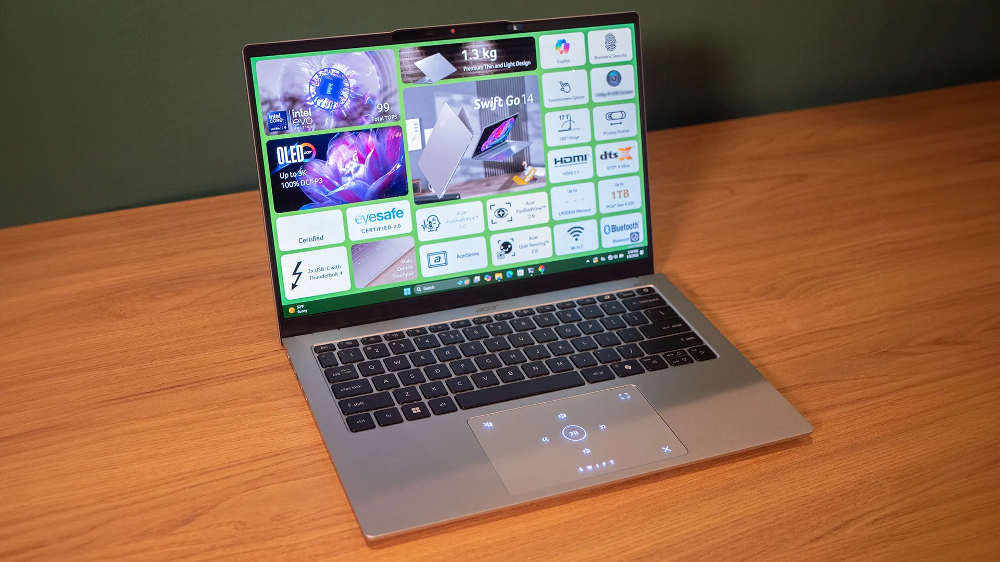
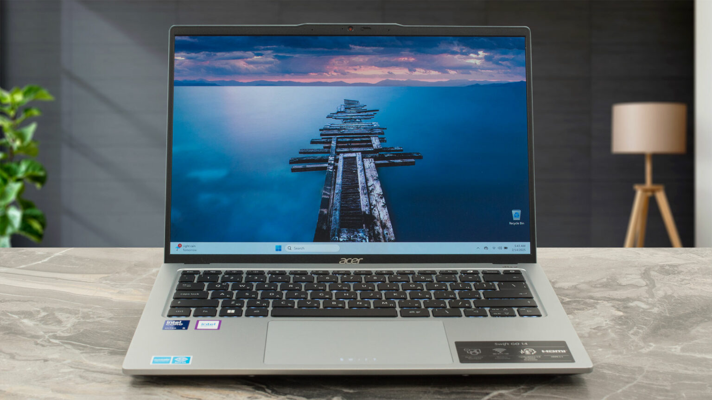
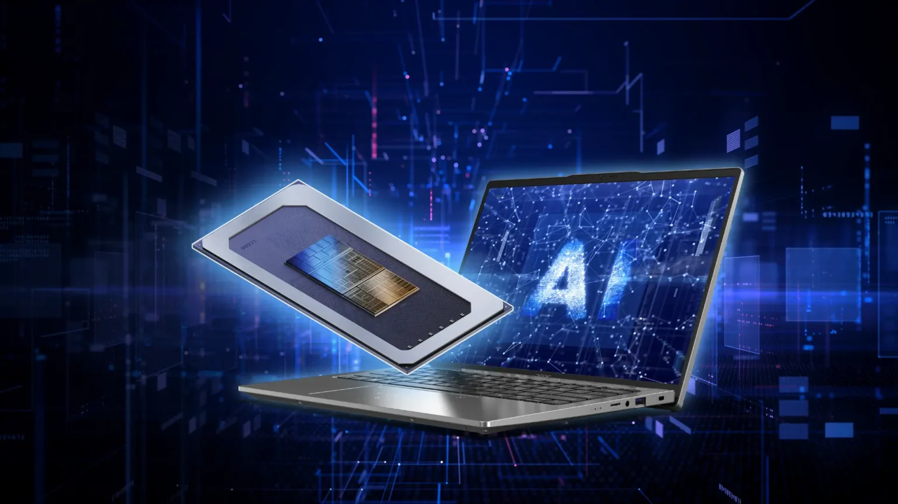
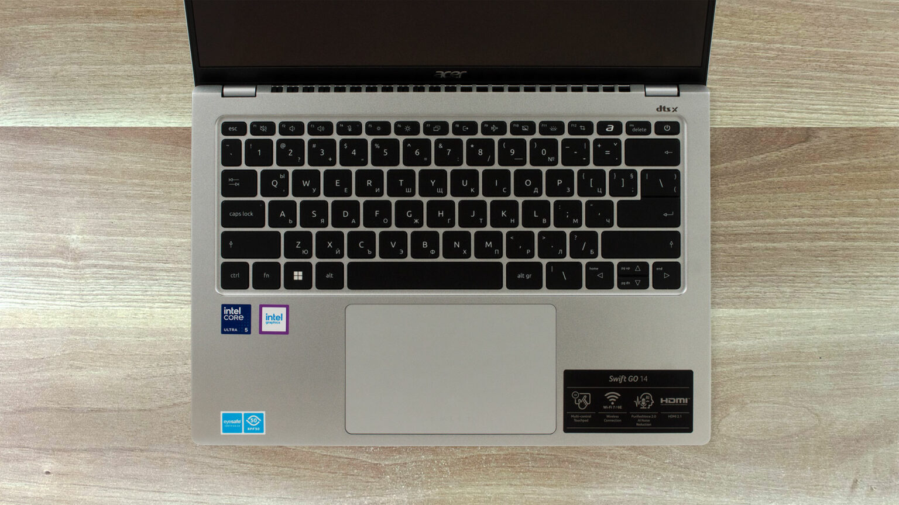
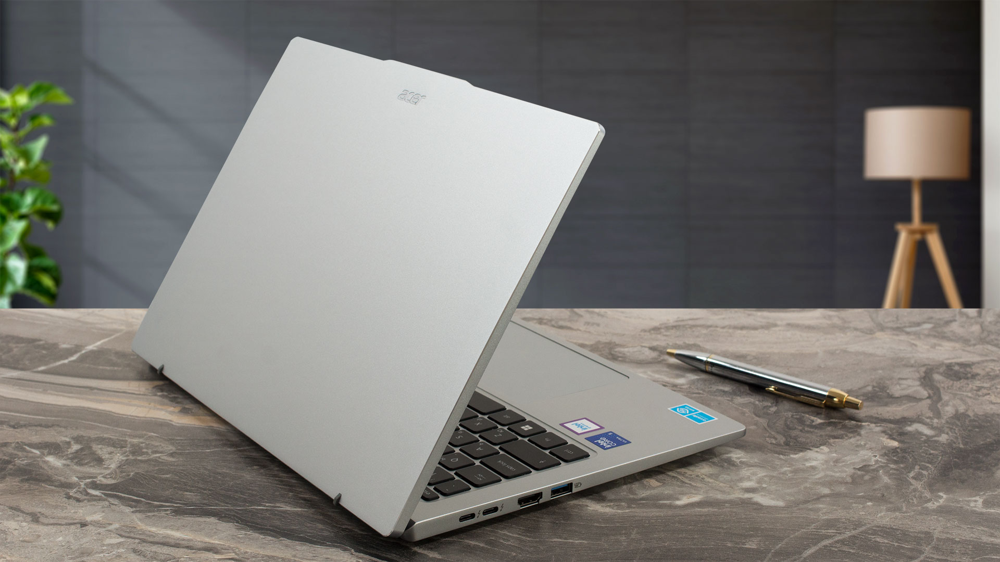

The Acer Swift Go 14 (2025) emerges as a compelling option in the ultraportable laptop segment, targeting budget-conscious users seeking a blend of performance, portability, and modern features. Given the current date, April 18, 2025, and the lack of specific 2025 model reviews, this analysis is based on the 2024 model's specifications and reviews, with the assumption that the 2025 version represents a continuation or minor update, particularly given Intel's processor timeline.
The Swift Go 14 (2025) features a sleek, silver aluminum chassis with a premium laser-etched cover, weighing 1.3 kg, which enhances portability for travel or daily commutes. The 180° lie-flat hinge allows for flexible usage, such as sharing screens or using it in tablet mode, which is particularly useful for collaborative settings. Reviews of the 2024 model, such as from Laptop Mag (Laptop Mag Review), praise the reflective sheen and minimalist lid design, though some note it lacks the premium feel of competitors like the MacBook Air or Dell XPS 13. The high-precision multi-control touchpad supports gestures for media control, enhancing user interaction.
| Feature | Details |
|---|---|
| Weight | 1.3 kg |
| Hinge | 180° lie-flat hinge |
| Cover | Premium laser-etched cover |
| Build Quality | Sturdy, mid-tier compared to premium models |
While functional, the build quality is described as mid-tier, with some reviews mentioning a plastic undercarriage in certain configurations, which may affect perceived durability.
| Display Type | Resolution | Color Gamut | Additional Features |
|---|---|---|---|
| 2K Touch IPS | 1920x1200 | Not specified | Touch-enabled |
| 3K OLED | 2880x1800 | 100% DCI-P3 | DisplayHDR True Black 500, Eyesafe 2.0 |
| 2K OLED | 2560x1600 | 100% DCI-P3 | DisplayHDR True Black 500, Eyesafe 2.0 |
The Swift Go 14 (2025) is powered by up to an Intel Core Ultra 9 (Series 2) processor, part of Intel's Meteor Lake architecture, with Intel Arc graphics. This configuration delivers excellent performance for productivity tasks, light gaming, and content creation, with up to 99 TOPS of total on-device AI performance. Reviews from PCMag (PCMag Review) highlight the graphics performance, particularly with Intel Arc, though some note fan noise under load, which could be a consideration for quiet environments.
The AI capabilities enhance efficiency in applications like video editing and photo manipulation, supported by features like Copilot, AcerSense™, and Acer PurifiedView™ 2.0, which improve video calls with supersharp resolution and background blur. RTINGS.com (RTINGS.com Review) conducted benchmarks in Performance mode, suggesting robust handling of productivity and gaming tasks, though dedicated GPU options are absent.
| Processor | Max AI Performance | Graphics |
|---|---|---|
| Up to Intel Core Ultra 9 | Up to 99 TOPS | Intel Arc Graphics |
Memory options go up to 32 GB LPDDR5X, ensuring smooth multitasking, and storage can reach 2TB, as noted in 2024 reviews, though specific 2025 configurations may vary by region.
The keyboard has seen improvements, offering a comfortable typing experience with good key travel, as per Laptop Mag reviews. The high-precision multi-control touchpad supports gestures, enhancing navigation and media control, which is particularly useful for productivity tasks.
While specific battery life details for 2025 are not provided, the 2024 model was noted for all-day battery life, likely carrying over due to similar hardware. The inclusion of fast-charging via USB-C ports, as mentioned in Acer's specs, ensures quick top-ups, making it convenient for on-the-go use.
While specific pricing for 2025 is not detailed, the 2024 model started at around $800, with higher configurations reaching $1,100, as noted in reviews like PCMag. Availability may vary by region, with all models subject to stock, as per Acer's notes.
The Acer Swift Go 14 (2025) appears to be an excellent choice for users seeking a balance of performance, portability, and affordability. With its latest Intel Core Ultra processors, AI capabilities, and versatile display options, it caters well to students, professionals, and casual users. While it may not match the build quality or audio performance of premium laptops like the MacBook Air or Dell XPS 13, its value proposition makes it a compelling option in its price range. If you prioritize function over form and need a reliable, lightweight laptop for everyday tasks, the Acer Swift Go 14 is worth considering.
The Acer Swift Go 14 (2025) is a compelling ultraportable laptop that offers strong performance with Intel Core Ultra processors, vibrant OLED display options, and robust connectivity at a budget-friendly price. Its lightweight design and AI-enhanced features make it ideal for students and professionals, though fan noise and mid-tier build quality are minor drawbacks. For those prioritizing value and versatility, it’s a highly recommended choice.
Comment Section